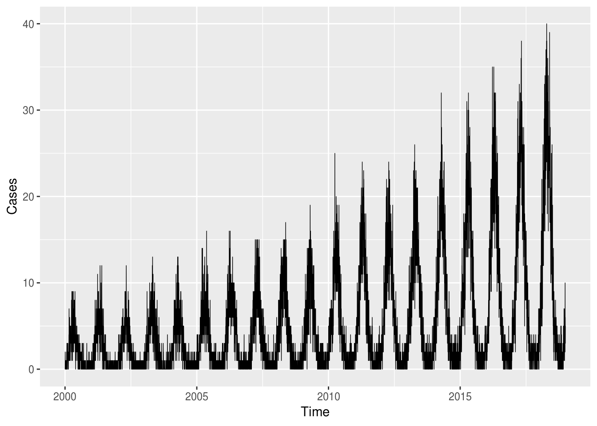
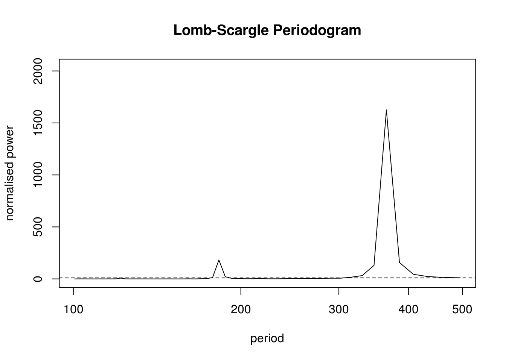

2 Panel Data - One Area
2.1 Aim
We are given a dataset containing daily counts of diseases from one geographical area. We want to identify:
- Does seasonality exist?
- If seasonality exists, when are the high/low seasons?
- Is there a general yearly trend (i.e. increasing or decreasing from year to year?)
- Is daily rainfall associated with the number of cases?
library(data.table)
library(ggplot2)
set.seed(4)
AMPLITUDE <- 1.5
SEASONAL_HORIZONTAL_SHIFT <- 20
d <- data.table(date=seq.Date(
from=as.Date("2000-01-01"),
to=as.Date("2018-12-31"),
by=1))
d[,date:=as.Date(date,origin="1970-01-1")]
d[,year:=as.numeric(format.Date(date,"%G"))]
d[,week:=as.numeric(format.Date(date,"%V"))]
d[,month:=as.numeric(format.Date(date,"%m"))]
d[,yearMinus2000:=year-2000]
d[,dailyrainfall:=runif(.N, min=0, max=10)]
d[,dayOfYear:=as.numeric(format.Date(date,"%j"))]
d[,seasonalEffect:=sin(2*pi*(dayOfYear-SEASONAL_HORIZONTAL_SHIFT)/365)]
d[,mu := exp(0.1 + yearMinus2000*0.1 + seasonalEffect*AMPLITUDE)]
d[,y:=rpois(.N,mu)]2.2 Data
Here we show the true data, and note that there is an increasing annual trend (the data gets higher as time goes on) and there is a seasonal pattern (one peak/trough per year)
q <- ggplot(d,aes(x=date,y=y))
q <- q + geom_line(lwd=0.25)
q <- q + scale_x_date("Time")
q <- q + scale_y_continuous("Cases")
q
We split out the data for a few years and see a clear seasonal trend:
q <- ggplot(d[year %in% c(2005:2010)],aes(x=dayOfYear,y=y))
q <- q + facet_wrap(~year)
q <- q + geom_point()
q <- q + stat_smooth(colour="red")
q <- q + scale_y_continuous("Day of year")
q <- q + scale_y_continuous("Cases")## Scale for 'y' is already present. Adding another scale for 'y', which
## will replace the existing scale.q## `geom_smooth()` using method = 'loess' and formula 'y ~ x'2.3 Model With Non-Parametric Seasonality
If we want to investigate the seasonality of our data, and identify when are the peaks and troughs, we can use non-parametric approaches. They are flexible and easy to implement, but they can lack power and be hard to interpret:
- Create a categorical variable for the seasons (e.g.
spring,summer,autumn,winter) and include this in the regression model - Create a categorical variable for the months (e.g.
Jan,Feb, …,Dec) and include this in the regression model
nfit0 <- glm(y~yearMinus2000 + dailyrainfall, data=d, family=poisson())
nfit1 <- glm(y~yearMinus2000 + dailyrainfall + as.factor(month), data=d, family=poisson())We can test the month categorical variable using a likelihood ratio test:
lmtest::lrtest(nfit0, nfit1)## Likelihood ratio test
##
## Model 1: y ~ yearMinus2000 + dailyrainfall
## Model 2: y ~ yearMinus2000 + dailyrainfall + as.factor(month)
## #Df LogLik Df Chisq Pr(>Chisq)
## 1 3 -26904
## 2 14 -13251 11 27307 < 2.2e-16 ***
## ---
## Signif. codes: 0 '***' 0.001 '**' 0.01 '*' 0.05 '.' 0.1 ' ' 1And then we can look at the output of our regression:
summary(nfit1)##
## Call:
## glm(formula = y ~ yearMinus2000 + dailyrainfall + as.factor(month),
## family = poisson(), data = d)
##
## Deviance Residuals:
## Min 1Q Median 3Q Max
## -4.2874 -0.9578 -0.1498 0.5894 3.9130
##
## Coefficients:
## Estimate Std. Error z value Pr(>|z|)
## (Intercept) -0.003849 0.028882 -0.133 0.894
## yearMinus2000 0.101654 0.001053 96.578 <2e-16 ***
## dailyrainfall 0.000442 0.001852 0.239 0.811
## as.factor(month)2 0.751048 0.029854 25.157 <2e-16 ***
## as.factor(month)3 1.303525 0.027328 47.700 <2e-16 ***
## as.factor(month)4 1.543098 0.026781 57.619 <2e-16 ***
## as.factor(month)5 1.425207 0.026992 52.801 <2e-16 ***
## as.factor(month)6 0.955465 0.028647 33.354 <2e-16 ***
## as.factor(month)7 0.286169 0.032060 8.926 <2e-16 ***
## as.factor(month)8 -0.541443 0.039932 -13.559 <2e-16 ***
## as.factor(month)9 -1.114005 0.049322 -22.586 <2e-16 ***
## as.factor(month)10 -1.350683 0.053389 -25.299 <2e-16 ***
## as.factor(month)11 -1.235671 0.051682 -23.909 <2e-16 ***
## as.factor(month)12 -0.754107 0.042777 -17.629 <2e-16 ***
## ---
## Signif. codes: 0 '***' 0.001 '**' 0.01 '*' 0.05 '.' 0.1 ' ' 1
##
## (Dispersion parameter for poisson family taken to be 1)
##
## Null deviance: 45536.8 on 6939 degrees of freedom
## Residual deviance: 8045.6 on 6926 degrees of freedom
## AIC: 26529
##
## Number of Fisher Scoring iterations: 5NOTE: See that this is basically the same as a normal regression.
If we want to identify outbreaks, then we need to use the standard prediction interval formula:
\[ 95\% \text{ CI} = \text{sample average} \pm 1.96 \times \text{sample standard deviation} \sqrt{ 1 + 1 / n} \] This allows us to identify what the expected thresholds are:
pred <- predict(nfit1, type = "response", se.fit = T, newdata = d)
d[, threshold0 := pred$fit]
d[, threshold2 := FarringtonThreshold(pred, phi = 1, z = 2, skewness.transform = "2/3")]q <- ggplot(d[year>2015],aes(x=date,y=y))
q <- q + geom_ribbon(mapping=aes(ymin=-Inf,ymax=threshold2),fill="green",alpha=0.5)
q <- q + geom_ribbon(mapping=aes(ymin=threshold2,ymax=Inf),fill="red",alpha=0.5)
q <- q + geom_line(lwd=0.25)
q <- q + geom_point(data=d[year>2015 & y>threshold2],colour="black",size=2.5)
q <- q + geom_point(data=d[year>2015 & y>threshold2],colour="red",size=1.5)
q <- q + scale_x_date("Time")
q <- q + scale_y_continuous("Cases")
q2.4 Model With Parametric Seasonality
Parametric approaches are more powerful but require more effort:
- Identify the periodicity of the seasonality (how many days between peaks?)
- Using trigonometry, transform
day of yearinto variables that appropriately model the observed periodicity - Obtain coefficient estimates
- Back-transform these estimates into human-understandable values (day of peak, day of trough)
NOTE: You don’t always have to investigate seasonality! It depends entirely on what the purpose of your analysis is!
The Lomb-Scargle Periodogram shows a clear seasonality with a period of 365 days.
# R CODE
lomb::lsp(d$y,from=100,to=500,ofac=1,type="period")
We then generate two new variables cos365 and sin365 and perform a likelihood ratio test to see if they are significant or not. This is done with two simple poisson regressions.
# R CODE
d[,cos365:=cos(dayOfYear*2*pi/365)]
d[,sin365:=sin(dayOfYear*2*pi/365)]
pfit0 <- glm(y~yearMinus2000 + dailyrainfall, data=d, family=poisson())
pfit1 <- glm(y~yearMinus2000 + dailyrainfall + sin365 + cos365, data=d, family=poisson())We can test the seasonality using a likelihood ratio test (which we already strongly suspected due to the periodogram):
lmtest::lrtest(pfit0, pfit1)## Likelihood ratio test
##
## Model 1: y ~ yearMinus2000 + dailyrainfall
## Model 2: y ~ yearMinus2000 + dailyrainfall + sin365 + cos365
## #Df LogLik Df Chisq Pr(>Chisq)
## 1 3 -26904
## 2 5 -12892 2 28024 < 2.2e-16 ***
## ---
## Signif. codes: 0 '***' 0.001 '**' 0.01 '*' 0.05 '.' 0.1 ' ' 1And then we can look at the output of our regression:
summary(pfit1)##
## Call:
## glm(formula = y ~ yearMinus2000 + dailyrainfall + sin365 + cos365,
## family = poisson(), data = d)
##
## Deviance Residuals:
## Min 1Q Median 3Q Max
## -4.0676 -0.9229 -0.1170 0.5861 3.4103
##
## Coefficients:
## Estimate Std. Error z value Pr(>|z|)
## (Intercept) 0.0887436 0.0176742 5.021 5.14e-07 ***
## yearMinus2000 0.1016117 0.0010525 96.539 < 2e-16 ***
## dailyrainfall 0.0002287 0.0018476 0.124 0.901
## sin365 1.3972586 0.0103200 135.393 < 2e-16 ***
## cos365 -0.5035265 0.0086308 -58.341 < 2e-16 ***
## ---
## Signif. codes: 0 '***' 0.001 '**' 0.01 '*' 0.05 '.' 0.1 ' ' 1
##
## (Dispersion parameter for poisson family taken to be 1)
##
## Null deviance: 45536.8 on 6939 degrees of freedom
## Residual deviance: 7328.5 on 6935 degrees of freedom
## AIC: 25794
##
## Number of Fisher Scoring iterations: 5We also see that the (significant!) coefficient for year is 0.1 which means that for each additional year, the outcome increases by exp(0.1)=1.11. We also see that the coefficient for dailyrainfall was not significant, which means that we did not find a significant association between the outcome and dailyrainfall.
NOTE: See that this is basically the same as a normal regression.
Through the likelihood ratio test we saw a clear significant seasonal effect. We can now use trigonometry to back-calculate the amplitude and location of peak/troughs from the cos365 and sin365 estimates:
b1 <- 1.428417 # sin coefficient
b2 <- -0.512912 # cos coefficient
amplitude <- sqrt(b1^2 + b2^2)
p <- atan(b1/b2) * 365/2/pi
if (p > 0) {
peak <- p
trough <- p + 365/2
} else {
peak <- p + 365/2
trough <- p + 365
}
if (b1 < 0) {
g <- peak
peak <- trough
trough <- g
}
print(sprintf("amplitude is estimated as %s, peak is estimated as %s, trough is estimated as %s",round(amplitude,2),round(peak),round(trough)))## [1] "amplitude is estimated as 1.52, peak is estimated as 111, trough is estimated as 294"print(sprintf("true values are: amplitude: %s, peak: %s, trough: %s",round(AMPLITUDE,2),round(365/4+SEASONAL_HORIZONTAL_SHIFT),round(3*365/4+SEASONAL_HORIZONTAL_SHIFT)))## [1] "true values are: amplitude: 1.5, peak: 111, trough: 294"NOTE: An amplitude of 1.5 means that when comparing the average time of year to the peak, the peak is expected to be exp(1.5)=4.5 times higher than average. We take the exponential because we have run a poisson regression (so think incident rate ratio).
2.5 Autocorrelation
We check the pacf of the residuals to ensure that there is no autocorrelation. If we observe autocorrelation in our residuals, then we need to use a robust variance estimator (i.e. it makes our estimated variances bigger to account for our poor model fitting).
Here we see that our non-parametric seasonality model has not accounted for all of the associations in the data, so there is some autocorrelation in the residuals:
d[,residuals:=residuals(nfit1, type = "response")]
d[,predicted:=predict(nfit1, type = "response")]
pacf(d$residuals)
Here we see that our parametric seasonality model has accounted for all of the associations in the data, so there is no autocorrelation in the residuals:
d[,residuals:=residuals(pfit1, type = "response")]
d[,predicted:=predict(pfit1, type = "response")]
pacf(d$residuals)